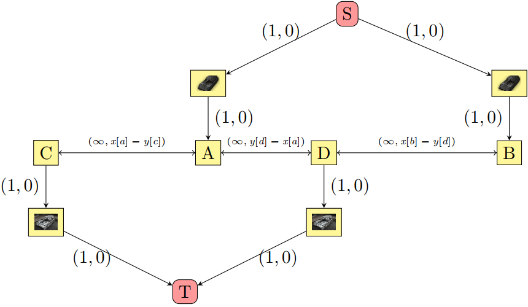

受到雪灾的影响，很多餐厅没有采购到足够的食材，因此小 C 不得不从不同的餐厅购买食物，更加悲催的是因为雪灾的原因，送餐员最多只能携带一道菜，且最多只送一次。
现在小 C 需要叫 $n$ 道菜，于是他联系了 $n$ 名送餐员。
送餐员和餐厅可以看成在一条直线上。第 $i$ 名送餐员有一个整数坐标 $x_i$，且他索要的工资为 $\left| \text{他所在的坐标} - \text{餐厅的坐标} \right|$ 元。
第 $j$ 家餐厅有一个整数坐标 $y_j$，且它们的食材只能提供不超过 $c_j$ 道菜，每道菜价值 $w_j$ 元。
现在小 C 希望知道，他的最小花费。
第一行包含两个正整数 $n, m$ ($2 \leq n, m \leq 10^5$)，表示送餐员的数量和餐厅的数量。
第二行包含 $n$ 个非负整数 $x_1, x_2, \cdots, x_n$ ($0 \leq x_1 \leq x_2 \leq \cdots \leq x_n \leq 10^9$)，表示送餐员的坐标。
接下来 $m$ 行，第 $i$ 行包含三个整数 $y_i, w_i, c_i$ ($0 \leq y_1 \leq y_2 \leq \cdots \leq y_m \leq 10^9; 0 \leq w_i, c_i \leq 10^9$)，分别表示餐厅的坐标、菜的价格以及最大出售量。
输出一行一个整数，表示最小花费。如果无法完成任务，则输出 $-1$。
这道题是 [Codeforces797F]Mice and Holes 的加强$^\infty$ 情形。
我们先来考虑对于那道题，如果 $n, m$ 达到 $10^5$ 该怎么做。
显然，暴力的 $O \left( n m \right)$ DP 已经无法胜任，我们需要寻找更优秀的方法。
当然，这个 DP 可以通过某种凸优化达到 $O \left( \left( n + m \right) \log \left( n + m \right) \right)$，下面讲一个贪心 (模拟费用流) 的做法。
先不妨假设 $c_i = 1$ (否则多开几个相同的餐厅/洞即可)。
容易建立出一个费用流的模型 (下图来自 WC2019《模拟费用流问题》课件，以下统一称上面这排为老鼠，下面这排为洞)：
从左往右扫描每一只老鼠，先为它匹配一个最近的向左的洞。
当然，它也可能反悔走向右边的洞，对应与网络中就是，存在负权圈。
因此，考虑使用消圈版本的费用流。注意到一个流 $f$ 为最小费用最大流的充要条件是，残量网络 $G_f$ 中不存在负圈 (最小费用) 且不存在从 $S$ 到 $T$ 的路径 (最大流)。
而 "最大流" 这一方面是容易满足的，因此我们需要保证 $G_f$ 中不存在负圈。
于是，我们需要存储一些 "潜在" 的负圈，如上图中的 $T \to C \to A \to D \to T$ 就是一个潜在的负圈。
当我们 "消" 这个负圈的时候，对答案就会产生 $c_{aug} = \left( y_{next} - x_a \right) - \left( x_a - y_c \right)$ 的贡献。
因此，当扫描到下一个洞 $next$ 的时候，如果 $c_{aug} < 0$，说明这个增广是有价值的，我们就需要将其进行增广。
当然，增广后，这个 "洞" 又有可能反悔，因为可能形成更优的增广路径，比如 $S \to B \to D \to A \to C \to T$，因此我们还是需要记录这条增广路经，并记录出这条路径的增广权值。
于是，久而久之，这样不断循环，就形成了一个消圈费用流的算法。
我们维护潜在负圈集合 $Q_0$ 和增广路径集合 $Q_1$，由费用流的贪心性质，在两个集合中优先选择代价小的，因此可以使用优先队列 (堆)。
于是，这个算法的主要过程如下：
def insert_mouse(pos)
cost ← cost + Q1.top() + pos
Q0.push(-pos * 2 - Q1.top())
Q1.pop()
def insert_hole(pos)
if |Q0| ∧ Q0.top() + pos < 0
cost ← cost + Q0.top() + pos
Q1.push(-pos * 2 - Q0.top())
Q0.pop()
else
Q1.push(-pos)
依次从左往右添加老鼠/洞，注意起初一定要先加洞再加老鼠，否则在 $- \infty$ 远处放一个洞。
最后变量 cost 的值就是我们所要的答案。
现在如果有新的一项 —— 菜的价格 (或者说 "洞的代价") 又该怎么处理呢？
其实本质都是一样的，还是模拟费用流的 "消圈算法"。
伪代码如下：
def insert_mouse(pos)
cost ← cost + Q1.top() + pos
Q0.push(-pos * 2 - Q1.top())
Q1.pop()
def insert_hole(pos, weight)
if |Q0| ∧ Q0.top() + pos + weight < 0
cost ← cost + Q0.top() + pos + weight
Q1.push(-pos * 2 - Q0.top())
Q0.pop()
else
Q1.push(-pos + weight)
是不是大(mei)同(you)小(qu)异(bie)呢？
那么，对于 $c_i \neq 1$ 的情况，其实也不难了：
如果把它们看成 $c_i$ 个不同的餐厅，那么整个做法的时间复杂度将会变成 $O \left( \sum c_i \right)$。
然而，这些餐厅的基本属性 (坐标, 价格) 都是相同的，因此在堆中也会出现大量相同元素。
因此我们把这样的相同元素合并，在堆中记录 std::pair 表示这个潜在负圈和增广路径在堆中会出现多少次 (即增广的容量)。
于是时间复杂度不变，还是 $O \left( \left( n + m \right) \log \left( n + m \right) \right)$ (证明可以看 WC2019 课件)。
#include <bits/stdc++.h>
typedef long long ll;
typedef std::pair <ll, int> pr;
typedef std::priority_queue <pr, std::vector <pr>, std::greater <pr> > prio_que;
const int N = 100054;
const ll INF = 0x3f3f3f3f3f3fll;
int n, m;
int x[N], y[N], w[N], c[N];
ll ans = 0;
prio_que Q0, Q1;
inline int min(const int x, const int y) {return x < y ? x : y;}
inline void insert_mouse(ll pos) {
ll val; int D; std::tie(val, D) = Q1.top(), Q1.pop();
ans += val + pos, Q0.emplace(-pos * 2 - val, 1);
if (--D) Q1.emplace(val, D);
}
inline void insert_hole(ll pos, int weight, int count) {
ll val; int D, c, f = 0; // c : current flow, f : total flow
for (; f < count && !Q0.empty() && Q0.top().first + pos + weight < 0; ) {
std::tie(val, D) = Q0.top(), Q0.pop(), c = min(D, count - f);
ans += (val + pos + weight) * c, f += c;
if (D -= c) Q0.emplace(val, D);
Q1.emplace(-pos * 2 - val, c);
}
if (f < count) Q1.emplace(-pos + weight, count - f);
if (f) Q0.emplace(-pos - weight, f);
}
int main() {
int i, j;
scanf("%d%d", &n, &m);
for (i = 0; i < n; ++i) scanf("%d", x + i);
for (i = 0; i < m; ++i) scanf("%d%d%d", y + i, w + i, c + i);
if (std::accumulate(c, c + m, 0ll) < n) return puts("-1"), 0;
insert_hole(-INF, 0, n);
for (i = j = 0; i < n || j < m; j == m || (i != n && x[i] <= y[j]) ? (insert_mouse(x[i]), ++i) : (insert_hole(y[j], w[j], c[j]), ++j));
printf("%lld\n", ans);
return 0;
}
坑1：别忘了判断无解情况 ($\sum c_i < n$)。
坑2：在对堆进行 top/pop 操作的时候时刻记得判堆是否为空。